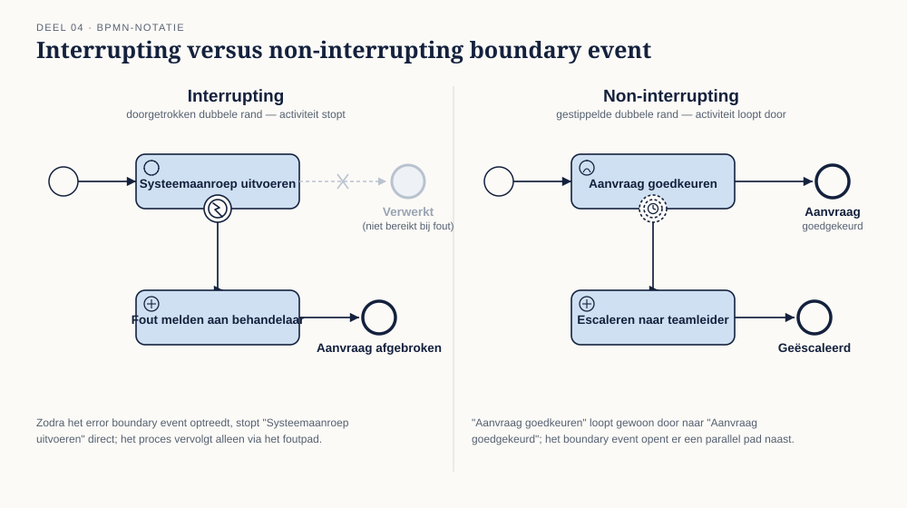
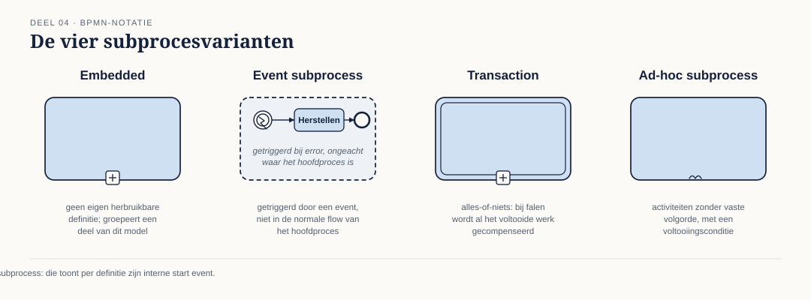

Deel 4 — BPMN basis II: de analytic subclass
Reader · Ductus-cursus BPMN, CMMN & DMN · niveau 1 (fundament) · deel 4 van 30 · studielast ± 5 uur
Dit materiaal bereidt voor op het examen OCEB 2 Fundamental van de Object Management Group. Het is geen vervanging van het officiële examenmateriaal en de specificaties van OMG.
Leerdoelen
Na dit deel kun je:
- Alle eventtypen van de analytic subclass benoemen en correct toepassen: message, timer, error, escalation, signal, conditional, compensation, terminate, link.
- Het verschil tussen interrupting en non-interrupting boundary events uitleggen en toepassen.
- Event-based, inclusive en complex gateway onderscheiden van elkaar en van de gateways uit deel 3.
- De subprocesvarianten (embedded, event subprocess, transaction, ad-hoc) onderscheiden en correct kiezen.
- Loops en multi-instance modelleren, sequentieel en parallel.
- De tokenlogica van een model uitleggen: wat er precies gebeurt bij een splitsing en een samenkomst.
4.1 Waarom een tweede subclass
Deel 3 behandelde de elementen die je in vrijwel elk businessmodel tegenkomt — de descriptive subclass. Veel processen hebben meer nodig: foutafhandeling die niet met een simpele exclusive gateway te vangen is, herhalende stappen, momenten waarop iets ondanks de normale voortgang moet gebeuren. Daarvoor bestaat de analytic subclass: dezelfde standaard, een rijkere set elementen.
Twee waarschuwingen vooraf. Ten eerste: meer elementen betekent meer manieren om een model onleesbaar te maken. De discipline uit deel 5 (modelleerstijl) is voor dit deel belangrijker dan voor deel 3, juist omdat de verleiding om alles te tonen hier groter is. Ten tweede: niet elk uitzonderingsscenario hoort in BPMN. Sommige "uitzonderingen" zijn eigenlijk dossierwerk (deel 1, §1.1) en horen in CMMN. Dit deel leert je de BPMN-gereedschappen; de keuze wanneer je ze gebruikt en wanneer niet, komt scherp terug in deel 8.
4.2 Eventtypen volledig
Naast none, message en timer (deel 3) kent de analytic subclass zes eventtypen extra:
- Error event — een fout die het normale verloop onderbreekt. Een error event heeft altijd een oorzaak die ergens anders in het model (of in een aangeroepen subproces) is ontstaan.
- Escalation event — een signaal dat iets binnen het proces de aandacht van een hoger niveau nodig heeft, zonder dat het per se een fout is. Een aanvraag die de normale termijn overschrijdt en daardoor geëscaleerd moet worden naar een teamleider.
- Signal event — een breed uitgezonden bericht, niet gericht aan één specifieke ontvanger. Het verschil met message: een message heeft een geadresseerde ontvanger, een signal kan door elk proces dat ernaar luistert worden opgepikt.
- Conditional event — treedt op zodra een voorwaarde waar wordt, niet op basis van een bericht of tijdstip maar op basis van een toestand (bijvoorbeeld: zodra de dekkingsgraad boven 100% komt).
- Compensation event — activeert compensatielogica: het ongedaan maken van een eerder voltooide activiteit wanneer het proces alsnog afgebroken moet worden.
- Terminate event — beëindigt het gehele proces onmiddellijk, inclusief alle nog lopende parallelle paden. Een zwaar middel; gebruik het spaarzaam en alleen waar een proces écht in zijn geheel moet stoppen.
- Link event — een technisch koppelpunt (throwing en catching) om een diagram over te laten lopen naar een ander deel van dezelfde plaat, zonder een echte sequence flow te tekenen. Puur een leesbaarheidsmiddel voor grote diagrammen.
4.3 Boundary events: interrupting en non-interrupting
Een boundary event hangt aan de rand van een activiteit of subprocess en vangt iets op terwijl die activiteit loopt. Het cruciale onderscheid:
- Interrupting (doorgetrokken lijn) — de lopende activiteit wordt afgebroken zodra het boundary event optreedt. Het proces vervolgt via het pad vanaf het boundary event.
- Non-interrupting (gestippelde lijn) — de lopende activiteit gaat gewoon door; het boundary event start een parallel pad ernaast.
Een timer boundary event op een goedkeuringsactiviteit die na vijf dagen escaleert naar een teamleider, terwijl de oorspronkelijke goedkeuring gewoon door kan gaan, is non-interrupting: je wilt de escalatie niet in plaats van de goedkeuring, maar ernaast. Een error boundary event op een systeemaanroep die bij een fout de hele activiteit afbreekt en naar een foutafhandelingspad stuurt, is interrupting: de oorspronkelijke activiteit heeft geen zin meer om door te laten lopen.
Dit onderscheid wordt vaak fout gemodelleerd doordat het verschil in de tekening klein is (doorgetrokken versus gestippeld) terwijl het gedrag fundamenteel verschilt. Controleer bij elk boundary event expliciet: moet de onderliggende activiteit stoppen, of niet?
4.4 Event-based, inclusive en complex gateway
Naast exclusive en parallel (deel 3) kent de analytic subclass drie gatewaytypes:
- Event-based gateway — routeert niet op een conditie maar op welk van meerdere mogelijke events als eerste optreedt. Typisch gebruikt na een activiteit waarvan je niet weet welke reactie als eerste komt: een bevestiging óf een afwijzing óf het verstrijken van een termijn, elk als apart pad.
- Inclusive gateway (OR) — een of meerdere van de uitgaande paden worden gevolgd, afhankelijk van welke condities waar zijn — nul, één of alle tegelijk. Bij de samenkomst wacht de inclusive join op alle paden die daadwerkelijk geactiveerd waren, niet op alle mogelijke paden.
- Complex gateway — voor routeringslogica die met geen van de andere gatewaytypes uit te drukken is. In de praktijk zelden nodig, en dat is precies waarom je hem zelden wilt: een complex gateway is vaak een teken dat de onderliggende logica eigenlijk een beslissing is die in DMN thuishoort (deel 6, deel 8) in plaats van in een gateway die zelf al complex genoeg is om apart te moeten uitleggen.
De inclusive gateway is de meest onderschatte bron van fouten. Omdat de join moet weten hoeveel van de mogelijke paden daadwerkelijk actief waren, is de synchronisatielogica lastiger te doorzien dan bij exclusive of parallel. Gebruik hem alleen waar de business daadwerkelijk "een of meer van" bedoelt, en niet als een makkelijke vervanger voor een combinatie van exclusive gateways.
4.5 Subprocessen
Vier varianten, elk met een eigen doel:
- Embedded subprocess — een subproces dat alleen binnen dit ene proces bestaat, niet herbruikbaar elders. Gebruikt om een deel van het model te groeperen en, indien collapsed getekend, het hoofdmodel overzichtelijk te houden.
- Event subprocess — een subproces dat niet in de normale flow zit maar wordt getriggerd door een event (vaak error, escalation of timer) ergens tijdens het hoofdproces, ongeacht waar het hoofdproces op dat moment is. Het alternatief voor een groot aantal boundary events verspreid over veel activiteiten.
- Transaction — een subproces met alles-of-niets-semantiek: als het faalt, wordt alles wat binnen de transactie al gebeurd is teruggedraaid via compensatie. Relevant waar meerdere stappen samen consistent moeten zijn of geen van alle.
- Ad-hoc subprocess — een verzameling activiteiten zonder vaste volgorde ertussen, met een voltooiingsconditie. Dit is BPMN's eigen antwoord op ongestructureerd werk — en meteen de plek waar de grens met CMMN het scherpst gevoeld wordt (deel 8).
Keuzevraag die in elk model terugkomt: verspreid je foutafhandeling over losse boundary events op elke activiteit, of vang je ze centraal met één event subprocess? Bij twee of drie foutbronnen is verspreiden overzichtelijker; bij veel activiteiten die dezelfde foutafhandeling delen, is een event subprocess overzichtelijker en voorkomt het duplicatie.
4.6 Loops en multi-instance
Twee manieren om herhaling te modelleren:
- Standard loop — een activiteit die zichzelf herhaalt zolang (of totdat) een conditie geldt, zonder dat het aantal herhalingen vooraf bekend is.
- Multi-instance — een activiteit die meerdere keren wordt uitgevoerd over een verzameling, sequentieel of parallel. Sequentieel multi-instance voert de ene instantie na de andere uit; parallel multi-instance start ze tegelijk.
Bij multi-instance is de completion condition de vraag die het meest over het hoofd wordt gezien: moeten alle instanties voltooid zijn voordat het proces verdergaat, of is een deel voldoende? Bij een goedkeuring die door drie van de vijf comitéleden bevestigd moet worden, is de completion condition niet "alle vijf" maar "drie van de vijf" — dat expliciet vastleggen is onderdeel van een correct model, niet een detail voor de bouwfase.
4.7 Tokenlogica
BPMN's uitvoeringsmodel is te begrijpen via het beeld van een token: een denkbeeldig markeertje dat door het proces reist. Een startevent produceert een token. Een activiteit consumeert het token bij binnenkomst en produceert het weer bij voltooiing. Een exclusive gateway laat het token op precies één uitgaand pad verder reizen. Een parallel split maakt van één token er meerdere — één per uitgaand pad — en een parallel join wacht tot er op elk inkomend pad een token is aangekomen voordat er weer één token verdergaat.
Dit beeld verklaart in één keer waarom je splitsingstype en samenkomsttype op elkaar moet laten aansluiten (deel 3, §3.5): een parallel split produceert meerdere tokens; een exclusive join verwacht er maar één per keer en laat elk binnenkomend token apart doorgaan. Combineer je een parallel split met een exclusive join, dan gaat het proces niet één keer verder na synchronisatie, maar zo vaak als er tokens binnenkomen — een fout die pas bij uitvoering zichtbaar wordt en in een statische tekening onopgemerkt blijft.
Voor een inclusive gateway is de tokenlogica subtieler: de split produceert een token voor elk pad waarvan de conditie waar is, en de join moet — voordat hij een token doorlaat — weten hoeveel tokens er onderweg zijn om op te wachten. Dat is precies waarom inclusive gateways lastiger zijn dan ze op het eerste gezicht lijken.
Kernbegrippen
Error / escalation / signal / conditional / compensation / terminate / link event — de zes aanvullende eventtypen van de analytic subclass · Boundary event — event aan de rand van een activiteit · Interrupting / non-interrupting — wel of niet de onderliggende activiteit afbreken · Event-based gateway — routeert op welk event het eerst optreedt · Inclusive gateway (OR) — een of meer paden, afhankelijk van condities · Complex gateway — routeringslogica buiten de andere typen · Embedded / event subprocess / transaction / ad-hoc subprocess — de vier subprocesvarianten · Standard loop / multi-instance (sequentieel/parallel) · Completion condition · Token — het uitvoeringsmodel van BPMN
Examenrelevantie — OCEB 2 Fundamental
Sluit de Business Process Modeling Skills en Business Process Modeling Concepts af voor wat betreft BPMN. Het examen toetst met name het correct herkennen van interrupting versus non-interrupting boundary events en het effect van elk gatewaytype op de tokenstroom in een gegeven diagram.
Leeswijzer bij de specificatie
- BPMN 2.0.2 — tabel 2.2 (Analytic Conformance Sub-Class Elements and Attributes), hoofdstuk 10 (Events, volledig), hoofdstuk 13 (Gateways), hoofdstuk 10.2 (Sub-Processes)
Figurenlijst



